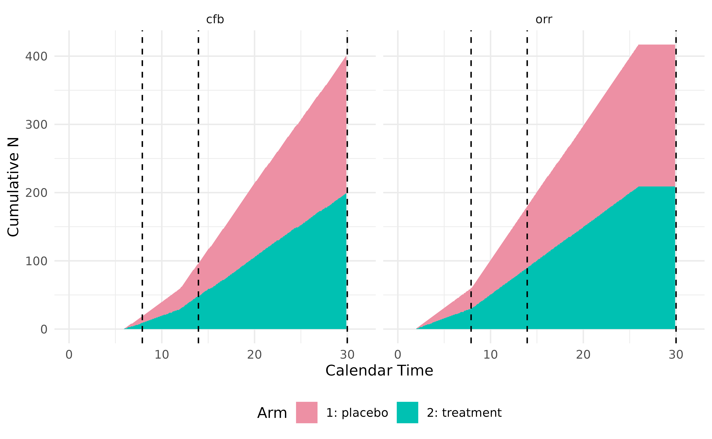

Define Non-Time-to-Event Endpoints
Source:vignettes/defineNonTimeToEventEndpoints.Rmd
defineNonTimeToEventEndpoints.RmdTrialSimulator provides a flexible framework for
defining and simulating a variety of clinical trial endpoints by
specifying the type parameter in endpoint.
This vignette covers non-time-to-event (non-TTE) endpoints,
demonstrating how they can be defined, integrated into trial arms, and
analyzed at pre-specified milestones. For time-to-event endpoints,
please refer to the vignette Define Time-to-Event Endpoints in
Clinical Trials. For longitudinal endpoints, please refer to the
vignette Define Longitudinal
Endpoints in Clinical Trials
This vignette demonstrates how to use the following key functions to define non-TTE endpoints. For the sake of completeness, we also demonstrates how to define arms and trial with the created endpoints
-
endpoint: Creates one or more endpoints. It can also be used to define covariates, bio-markers, sub-group indicators, etc. -
arm: Creates one or more arms -
add_endpoints: Add one or more endpoints to an arm -
milestone: Defines one or more milestones when data snapshots are needed for analysis
Define endpoints with random number generators
Similar to time-to-event endpoints, non-TTE endpoints can be defined
using any univariate random number generator that takes n
(number of observations) as its first argument. The stats
package provides a set of random number generators that can be assigned
to generator in endpoints, where additional
arguments required by generator can be passed through
.... When creating non-TTE endpoints, the argument
type should be set to "non-tte", and the
argument readout should be specified as a named numeric
vector, indicating the time required for the endpoint to be available
for analysis after patient enrollment.
In the example below, we define two types of endpoints:
Continuous endpoint: Tumor size change from baseline (
cfb), available after 6 months, assuming a normal distribution (generator = rnorm) with custommeanandsd.Binary endpoint: Objective response rate (
orr), available after 2 months, assuming a binomial distribution (generator = rbinom) withsize = 1and customprob.
## endpoints in placebo arm
tumor_cfb_pbo <- endpoint(name = 'cfb', type = 'non-tte',
readout = c(cfb = 6),
generator = rnorm, mean = .8, sd = 3.2)
orr_pbo <- endpoint(name = 'orr', type = 'non-tte',
readout = c(orr = 2),
generator = rbinom, size = 1, prob = .1)
## define the placebo arm
pbo <- arm(name = 'placebo')
pbo$add_endpoints(tumor_cfb_pbo, orr_pbo)
## endpoints in treatment arm
tumor_cfb_trt <- endpoint(name = 'cfb', type = 'non-tte',
readout = c(cfb = 6),
generator = rnorm, mean = -2.3, sd = 1.5)
orr_trt <- endpoint(name = 'orr', type = 'non-tte',
readout = c(orr = 2),
generator = rbinom, size = 1, prob = .25)
## define the treatment arm
trt <- arm(name = 'treatment')
trt$add_endpoints(tumor_cfb_trt, orr_trt)With the treatment arms defined, we can proceed to create a trial. Patients are recruited at a piecewise constant rate, with an accrual pattern as follows:
- First 6 months: 10 patients per month.
- After 6 months: 20 patients per month until 420 patients are randomized 1:1 into the two arms.
We also specify a dropout process with a Weibull distribution. The dropout rates are set as follows:
- 15% dropout at 12 months
- 30% dropout at 18 months
These constraints are resolved using the Weibull dropout function:
dropout_pars <- weibullDropout(c(12, 18), c(.15, .30))
dropout_pars
#> shape scale
#> 1.938589 30.635696Using the computed scale parameter 30.636 and shape parameter 1.939, we specify the trial setup:
accrual_rate <- data.frame(end_time = c(6, Inf),
piecewise_rate = c(10, 20))
trial <- trial(
name = 'Trial-31415', description = 'Example Clinical Trial',
n_patients = 420, duration = 30,
enroller = StaggeredRecruiter, accrual_rate = accrual_rate,
dropout = rweibull, scale = 30.636, shape = 1.939
)
#> Seed is not specified. TrialSimulator sets it to 1012203595
## add arms to the trial
trial$add_arms(sample_ratio = c(1, 1), trt, pbo)
#> Arm(s) <treatment, placebo> are added to the trial.
#> Randomization is done for 420 potential patients.
#> Data of 420 potential patients are generated for the trial with 2 arm(s) <treatment, placebo>.
trial
#> ⚕⚕ Trial Name: Trial-31415
#> ⚕⚕ Description: Example Clinical Trial
#> ⚕⚕ # of Arms: 2
#> ⚕⚕ Registered Arms: treatment, placebo
#> ⚕⚕ Sample Ratio: 1, 1
#> ⚕⚕ # of Patients: 420
#> ⚕⚕ Planned Duration: 30
#> ⚕⚕ Random Seed: 1012203595Here accrual_rate is an argument of
TrialSimulator::StaggeredRecruiter controlling how patients
are recruited into the trial. Similarly, scale and
shape are arguments of rweibull. All these
arguments are passed through ... of
trial().
TrialSimulator allows defining trial milestones at
specific time points when data is locked for analysis. Here, we define
three key milestones:
- Interim Analysis: Triggered when
orrhas been observed for 60 patients. - Random Checkpoint: For illustration purpose only. Triggered when the
trial has reached at least 10 months, and at least one of the following
conditions is met:
-
cfbhas been observed for at least 100 patients, -
orrhas been observed for at least 180 patients.
-
- Final Analysis: Occurs when the trial reaches 30 months.
interim <- milestone(name = 'interim',
when = eventNumber(endpoint = 'orr', n = 60),
action = doNothing)
random <- milestone(name = 'random',
when =
calendarTime(time = 10) &
(eventNumber(endpoint = 'cfb', n = 100) |
eventNumber(endpoint = 'orr', n = 180)
),
action = doNothing)
final <- milestone(name = 'final',
when = calendarTime(time = 30),
action = doNothing)Here action = doNothing in milestone means
we don’t expect any action at the time of triggered milestones. In
practice, instead of doNothing, custom action function can
be adopted to add or remove arms (e.g., dose selection), adjust sample
ratio per arm, or carry out statistical analysis based on locked data.
These advanced setups are covered in other vignettes.
Next, we register the milestones with a listener and create a controller to monitor and execute the trial.
## register milestones to the listener
listener <- listener()
listener$add_milestones(interim, random, final)
#> A milestone <interim> is registered.
#> A milestone <random> is registered.
#> A milestone <final> is registered.
## run the trial
controller <- controller(trial, listener)
controller$run()
#> Condition of milestone <interim> is being checked.
#> Data is locked at time = 7.9 for milestone <interim>.
#> Locked data can be accessed in Trial$get_locked_data('interim').
#> Number of events at lock time:
#> patient cfb orr arms
#> 1 99 18 60 c(50, 9,....
#>
#> Condition of milestone <random> is being checked.
#> Data is locked at time = 14 for milestone <random>.
#> Locked data can be accessed in Trial$get_locked_data('random').
#> Number of events at lock time:
#> patient cfb orr arms
#> 1 221 96 180 c(110, 4....
#>
#> Condition of milestone <final> is being checked.
#> Data is locked at time = 30 for milestone <final>.
#> Locked data can be accessed in Trial$get_locked_data('final').
#> Number of events at lock time:
#> patient cfb orr arms
#> 1 420 403 418 c(210, 2....
#>
#> Ignoring unknown labels:
#> • colour : ""
We can inspect the dataset locked at different milestone by calling
member function get_locked_data with milestone names.
Ideally, this should be done within custom action function, where
decision is made based on data locked at the time of a milestone.
interim_data <- trial$get_locked_data(milestone_name = 'interim')
random_data <- trial$get_locked_data(milestone_name = 'random')
final_data <- trial$get_locked_data(milestone_name = 'final')
head(interim_data)
#> patient_id arm enroll_time dropout_time cfb cfb_readout orr
#> 1 1 treatment 0.0 21.180883 -4.434289 6 0
#> 2 2 placebo 0.1 2.977640 NA 6 0
#> 3 3 placebo 0.2 28.175451 -1.657398 6 1
#> 4 4 treatment 0.3 27.254577 1.004898 6 0
#> 5 5 treatment 0.4 5.663727 NA 6 0
#> 6 6 placebo 0.5 27.379476 6.093597 6 0
#> orr_readout
#> 1 2
#> 2 2
#> 3 2
#> 4 2
#> 5 2
#> 6 2Since cfb has a 6-month readout time, at interim
analysis, some patients’ cfb values are still unavailable,
appearing as NA in interim_data. However,
these values become available in random_data collected at a
later time point. This demonstrates how TrialSimulator
properly and automatically handles endpoint availability at different
milestones
not_ready_at_interim <-
interim_data %>%
dplyr::filter(is.na(cfb) &
is.na(orr) &
enroll_time + 6 < dropout_time) %>%
head() %>%
print()
#> patient_id arm enroll_time dropout_time cfb cfb_readout orr orr_readout
#> 1 61 treatment 6.00 22.58184 NA 6 NA 2
#> 2 62 placebo 6.05 62.17731 NA 6 NA 2
#> 3 63 treatment 6.10 23.76025 NA 6 NA 2
#> 4 64 placebo 6.15 29.50080 NA 6 NA 2
#> 5 66 placebo 6.25 26.44169 NA 6 NA 2
#> 6 67 placebo 6.30 25.48133 NA 6 NA 2
random_data %>%
dplyr::filter(patient_id %in% not_ready_at_interim$patient_id) %>%
print()
#> patient_id arm enroll_time dropout_time cfb cfb_readout orr
#> 1 61 treatment 6.00 22.58184 -1.167254 6 0
#> 2 62 placebo 6.05 62.17731 -3.808641 6 0
#> 3 63 treatment 6.10 23.76025 -4.813609 6 0
#> 4 64 placebo 6.15 29.50080 1.547169 6 0
#> 5 66 placebo 6.25 26.44169 -3.164815 6 0
#> 6 67 placebo 6.30 25.48133 -3.931915 6 0
#> orr_readout
#> 1 2
#> 2 2
#> 3 2
#> 4 2
#> 5 2
#> 6 2In this example, we simulate tumor size change from baseline
(cfb). However, in many trials, it is more appropriate to
simulate tumor size at both baseline and follow-up separately to allow
for more complex modeling, such as longitudinal or repeated measures
analysis. This will be covered in another vignette.
With this flexible setup, TrialSimulator enables
efficient endpoint definition, adaptive trial execution, and data
monitoring—allowing users to design and simulate clinical trials
tailored to specific research needs.